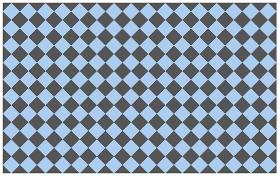

Css3选择器相关：
section > div直接子元素选择器
div + article相邻兄弟选择器（在元素之后出现）
div ~ article通用兄弟选择器（在元素之后出现）
属性选择器：
a[href] {
text-decoration: none;
}
a[href="#"] {
color: #f00;
}
/*包含two且属性值用空格分隔：*/
a[class~="two"] {
color: #ff0;
}
/*属性的第一个值以#开头：*/
a[href^="#"] {
color: #0f0;
}
/*以#结尾：*/
a[href$="#"] {
color: #00f;
}
/*包含#：*/
a[href*="#"] {
color: #0ff;
}
/*第一个属性值以#-开头：*/
a[href|="#"] {
color: #f0f;
}UI元素伪类：
Input:disabled
Input:enabled
Input:checked
div:first-child匹配属于其父元素的第1个子元素且是div，计数时不分类型，显示时分类型
div:last-child匹配属于其父元素的最后1个子元素且是div，计数时不分类型，显示时分类型div:nth-child(2) 匹配属于其父元素的第n个子元素且是div，计数时不分类型，显示时分类型div:nth-lat-child(2) 匹配属于其父元素的第n个子元素且是div，计数时不分类型，显示时分类型
n匹配下标，从0开始计算：
li:nth-child(2n) 双数
li:nth-child(2n+1) 单数
li:nth-child(n+4)
li:nth-child(odd) 奇数，下标从1开始计算
li:nth-child(even) 偶数，下标从1开始计算
li:nth-last-child(3) 倒数第3个
article:only-child 属于父元素的唯一元素，且是article(没有任何其他子元素)
div:nth-of-type(2) 匹配属于其父元素的第2个子元素且是div，计数时分类型
div:nth-last-of-type(2)
div:first-of-type div:last-of-type
article:only-of-type 属于父元素的唯一article元素（可以有其他类型的子元素）
div:empty 没有子元素的div元素（包括文本也没有）
a:not(:last-of-type) 不是最后一个a子元素
id选择器权重大于属性选择器
.red > [class=”red”]
Css伪元素：
div::selection 文本被选中后的样式
::-moz-selection 火狐
Css3边框与圆角：
四个值按照顺时针方向来
Border-radius兼容性写法：
-webkit-border-radius: 50%;
-moz-border-radius: 50%;
-ms-border-radius: 50%;
-o-border-radius: 50%;
border-radius: 50%;box-shadow水平偏移 垂直偏移 模糊 扩展 颜色 内部
box-shadow: 50px 30px 0px 0px yellow inset;border-image-repeat:stretch（拉伸）/repeat（重复）/round（铺满）/initial/inherit
border-image-source: url("border.jpg");
border-image-slice: 50%;/*图像边界向内偏移*/
border-image-width: 50%;/*图像边界的宽度*/
border-image-outset: 2; /*在边框外部绘制*/
border-image-repeat: repeat; css3背景与渐变：
背景绘制区域（显示范围）
background-clip: border-box;
background-clip: padding-box;
background-clip: content-box;背景图像定位（起始位置，原点位置，与偏移搭配使用）
background-origin: border-box;
background-origin: padding-box;
background-origin: content-box;
background-position:10px 10px; /*与偏移搭配使用*/background-size只写一个值，第二个默认是auto，根据比例等比缩放
background-size: contain; /*等比缩放到某一边达到容器边缘*/
background-size: cover;/*等比缩放填满容器*/
background-size: 800px 500px;
background-size: 800px;
background-size: 50% 50%;
background-size: 50%;
background-size: 100% 100%;
background-size: 100%;background-image多重背景，前面的会覆盖后面的
background-image: url('bg2.png'), url('bg1.jpg');demo：
<!DOCTYPE html>
<html>
<head>
<meta charset="UTF-8">
<title>background-image</title>
<style type="text/css">
div{
width:300px;
height:300px;
background:url(1.jpg) no-repeat center top,
url(2.jpg) no-repeat center 100px,
url(3.jpg) no-repeat center 200px;
margin:0 auto;
}
</style>
</head>
<body>
<div></div>
</body>
</html>
默认从上到下渐变：
div {
width: 800px; height: 500px;
background: -webkit-linear-gradient(red, blue);
background: -moz-linear-gradient(red, blue);
background: -o-linear-gradient(red, blue);
background: linear-gradient(red, blue);
}从左到右渐变
div {
width: 800px; height: 500px;
background: -webkit-linear-gradient(left, red , blue);
background: -moz-linear-gradient(right, red, blue);
background: -o-linear-gradient(right, red, blue);
background: linear-gradient(to right, red , blue);
}左上角开始的对角线渐变
div {
width: 800px; height: 500px;
background: -webkit-linear-gradient( left top, red, yellow, blue);
background: -moz-linear-gradient( right bottom, red, yellow, blue);
background: -o-linear-gradient( right bottom, red, yellow, blue);
background: linear-gradient(to right bottom, red, yellow, blue);
}角度控制方向
角度渐变是水平线和渐变线之间的角度，0deg是从下到上，90度是从左到右
div {
width: 800px; height: 500px;
background: -webkit-linear-gradient(135deg, red, yellow, blue);
background: -moz-linear-gradient(135deg, red, yellow, blue);
background: -o-linear-gradient(135deg, red, yellow, blue);
background: linear-gradient(135deg, red, yellow, blue);
}渐变具体位置控制
div {
width: 800px; height: 500px;
background: -webkit-linear-gradient(90deg, red 10%, orange 15%, yellow 20%, green 50%, blue 70%, indigo 80%, violet 100%);
background: -moz-linear-gradient(90deg, red 10%, orange 15%, yellow 20%, green 50%, blue 70%, indigo 80%, violet 100%);
background: -o-linear-gradient(90deg, red 10%, orange 15%, yellow 20%, green 50%, blue 70%, indigo 80%, violet 100%);
background: linear-gradient(90deg, red 10%, orange 15%, yellow 20%, green 50%, blue 70%, indigo 80%, violet 100%);
}透明色渐变
div {
width: 800px; height: 500px;
background: -webkit-linear-gradient(90deg, rgba(255, 0, 0, 0), rgba(255, 0, 0, 1));
background: -moz-linear-gradient(90deg, rgba(255, 0, 0, 0), rgba(255, 0, 0, 1));
background: -o-linear-gradient(90deg, rgba(255, 0, 0, 0), rgba(255, 0, 0, 1));
background: linear-gradient(90deg, rgba(255, 0, 0, 0), rgba(255, 0, 0, 1));
}重复渐变
div {
width: 800px; height: 500px;
background: -webkit-repeating-linear-gradient(90deg, red 0%, blue 10%, red 20%);
background: -moz-repeating-linear-gradient(90deg, red 0%, blue 10%, red 20%);
background: -o-repeating-linear-gradient(90deg, red 0%, blue 10%, red 20%);
background: repeating-linear-gradient(90deg, red 0%, blue 10%, red 20%);
}径向渐变，从内到外
div {
width: 800px; height: 500px;
background: -webkit-radial-gradient(red, blue);
background: -moz-radial-gradient(red, blue);
background: -o-radial-gradient(red, blue);
background: radial-gradient(red, blue);
}圆形渐变
div {
width: 800px; height: 500px;
background: -webkit-radial-gradient(circle, red, blue);
background: -moz-radial-gradient(circle, red, blue);
background: -o-radial-gradient(circle, red, blue);
background: radial-gradient(circle, red, blue);
}椭圆形渐变
div {
width: 800px; height: 500px;
background: -webkit-radial-gradient(ellipse, red, blue);
background: -moz-radial-gradient(ellipse, red, blue);
background: -o-radial-gradient(ellipse, red, blue);
background: radial-gradient(ellipse, red, blue);
}渐变从圆心到最近边
div.closest-side {
width: 300px; height: 200px; margin: 50px;
background: -webkit-radial-gradient(30% 70%, circle closest-side, red, blue);
background: -moz-radial-gradient(30% 70%, circle closest-side, red, blue);
background: -o-radial-gradient(30% 70%, circle closest-side, red, blue);
background: radial-gradient(30% 70%, circle closest-side, red, blue);
}渐变从圆心到最远边
div.farthest-side {
width: 300px; height: 200px; margin: 50px;
background: -webkit-radial-gradient(30% 70%, farthest-side, red, blue);
background: -moz-radial-gradient(30% 70%, farthest-side, red, blue);
background: -o-radial-gradient(30% 70%, farthest-side, red, blue);
background: radial-gradient(30% 70%, farthest-side, red, blue);
}渐变从圆心到最近角
div.closest-corner {
width: 300px; height: 200px; margin: 50px;
background: -webkit-radial-gradient(30% 70%, closest-corner, red, blue);
background: -moz-radial-gradient(30% 70%, closest-corner, red, blue);
background: -o-radial-gradient(30% 70%, closest-corner, red, blue);
background: radial-gradient(30% 70%, closest-corner, red, blue);
}渐变从圆心到最远角
div.farthest-corner {
width: 300px; height: 200px; margin: 50px;
background: -webkit-radial-gradient(30% 70%, farthest-corner, red, blue);
background: -moz-radial-gradient(30% 70%, farthest-corner, red, blue);
background: -o-radial-gradient(30% 70%, farthest-corner, red, blue);
background: radial-gradient(30% 70%, farthest-corner, red, blue);
}IE渐变从上到下
div {
width: 800px;
height: 500px;
filter: progid:DXImageTransform.Microsoft.gradient( startColorstr='#ff0000', endColorstr='#0000ff',GradientType=0 );
}IE渐变从左到右
div {
width: 800px;
height: 500px;
filter: progid:DXImageTransform.Microsoft.gradient( startColorstr='#ff0000', endColorstr='#0000ff',GradientType=1 );
}Demo：
<!DOCTYPE html>
<html lang="en">
<head>
<meta charset="UTF-8">
<title>线性渐变 - 特殊案例</title>
<style type="text/css">
div {
width: 800px; height: 500px; background: #abcdef; background-size: 50px 50px;
background-image:
-webkit-gradient(linear, 0 0, 100% 100%, color-stop(.25, #555), color-stop(.25, transparent), to(transparent)),
-webkit-gradient(linear, 0 100%, 100% 0, color-stop(.25, #555), color-stop(.25, transparent), to(transparent)),
-webkit-gradient(linear, 0 0, 100% 100%, color-stop(.75, transparent), color-stop(.75, #555)),
-webkit-gradient(linear, 0 100%, 100% 0, color-stop(.75, transparent), color-stop(.75, #555));
background-image:
-moz-linear-gradient(45deg, #555 25%, transparent 25%, transparent),
-moz-linear-gradient(-45deg, #555 25%, transparent 25%, transparent),
-moz-linear-gradient(45deg, transparent 75%, #555 75%),
-moz-linear-gradient(-45deg, transparent 75%, #555 75%);
background-image:
-o-linear-gradient(45deg, #555 25%, transparent 25%, transparent),
-o-linear-gradient(-45deg, #555 25%, transparent 25%, transparent),
-o-linear-gradient(45deg, transparent 75%, #555 75%),
-o-linear-gradient(-45deg, transparent 75%, #555 75%);
background-image:
linear-gradient(45deg, #555 25%, transparent 25%, transparent),
linear-gradient(-45deg, #555 25%, transparent 25%, transparent),
linear-gradient(45deg, transparent 75%, #555 75%),
linear-gradient(-45deg, transparent 75%, #555 75%);
}
</style>
</head>
<body>
<div></div>
</body>
</html>